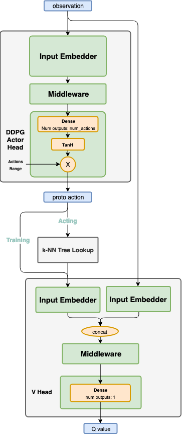

Wolpertinger¶
Actions space: Discrete
References: Deep Reinforcement Learning in Large Discrete Action Spaces
Network Structure¶
Algorithm Description¶
Choosing an action¶
Pass the current states through the actor network, and get a proto action \(\mu\). While in training phase, use a continuous exploration policy, such as the a gaussian noise, to add exploration noise to the proto action. Then, pass the proto action to a k-NN tree to find actual valid action candidates, which are in the surrounding neighborhood of the proto action. Those actions are then passed to the critic to evaluate their goodness, and eventually the discrete index of the action with the highest Q value is chosen. When testing, the same flow is used, but no exploration noise is added.
Training the network¶
Training the network is exactly the same as in DDPG. Unlike when choosing the action, the proto action is not passed through the k-NN tree. It is being passed directly to the critic.
Start by sampling a batch of transitions from the experience replay.
To train the critic network, use the following targets:
\(y_t=r(s_t,a_t )+\gamma \cdot Q(s_{t+1},\mu(s_{t+1} ))\)
First run the actor target network, using the next states as the inputs, and get \(\mu (s_{t+1} )\). Next, run the critic target network using the next states and \(\mu (s_{t+1} )\), and use the output to calculate \(y_t\) according to the equation above. To train the network, use the current states and actions as the inputs, and \(y_t\) as the targets.
To train the actor network, use the following equation:
\(\nabla_{\theta^\mu } J \approx E_{s_t \tilde{} \rho^\beta } [\nabla_a Q(s,a)|_{s=s_t,a=\mu (s_t ) } \cdot \nabla_{\theta^\mu} \mu(s)|_{s=s_t} ]\)
Use the actor’s online network to get the action mean values using the current states as the inputs. Then, use the critic online network in order to get the gradients of the critic output with respect to the action mean values \(\nabla _a Q(s,a)|_{s=s_t,a=\mu(s_t ) }\). Using the chain rule, calculate the gradients of the actor’s output, with respect to the actor weights, given \(\nabla_a Q(s,a)\). Finally, apply those gradients to the actor network.
After every training step, do a soft update of the critic and actor target networks’ weights from the online networks.